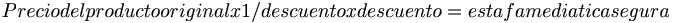

De: La Frikipedia, la enciclopedia extremadamente seria.
De: La Frikipedia, la enciclopedia extremadamente seria. De: La Frikipedia, la enciclopedia extremadamente seria.
Dícese de toda aquella cosa que no sirve para nada pero se le da un falso valor con la típica frase "No tiene precio", como lo son el amor, la familia y los amigos. Por ejemplo, una novia no es más que una puta gratis.
Otra acepción del término grátis es la de aquello que se ofrece por la patilla y que por lo tanto no hay que pagar, por ejemplo:llamar al 1004 pa gastá una broma o comer alguna que otra golosina en el Belros cuando la dependienta se da la vuelta (ejemm... bueno este no es un buen ejemplo).
Cuando Diox creó el mundo y todos andábamos felices y desnudos en el jardín de Ledén (Antiguo Que Ledén a Tu Hermana) todo era gratis. Pero todo esto cambió cuando Bush le hizo favores sexuales a Solid Snake para que éste tomara una pistola de etiquetas con precios, de esas que uno ve en el super y le dispara a los ojos a su hermano chico, y se metió al Jardín de Ledén a tu vieja, y le puso precio a casi todo excepto a lo inservible. Cuando Diox, que estaba jugando al quake con Dios (obviamente lo hizo mierda le ganó) volvió y vio lo que pasó mando a la mierda a Snake de una patada giratoria, al que después repararon los mecánicos del pit de Alonso, y por eso es un cabrón que se los carga a todos en el Metal.
Según estudios recientes de la Universidad Politécnica Internacional Ecuestre de Mérilan (localizada en Hoteles, los sobres de quetchup del VIPS, las descargas de porno de interné, los palillos de los bares, los llaveros y bolígrafos del IFEMA, etc...
¿Gratis? Como la tía Nati que folla gratis
Es cuando algo inútil es casi gratis, pero los muy hijos de puta de su santa madre igual te cobran un poquito. Y como si fuera poco, primero suben el precio, de tal manera que el descuento consiste realmente en subirle el valor al producto obsoleto en cuestión tantas veces como se planee publicar el descuento en la tele.
Ecuación del descuento 
La verdad es que consiste prácticamente en lo mismo, solo que llena tu casa de basura que no botas porque "te salió en un 6x9", "era una ganga", "no había donde perderse"
Al final, el 2x1 es otra manera de cagarte la vida y tu crees que te aprovechaste de ellos.
Tambíen está la "Lleve 1 y Pague 2" en la que demasiada gente muy inteliestúpida cae, convencida de que se ganó la lotería (pero el HdP&M dueño del Almacen).
Autor(es):
{kind=link}